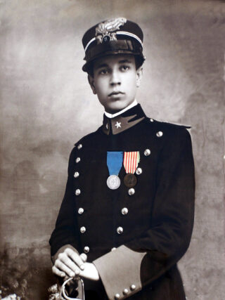

S. Ten. Serafino Montalto
BREVE BIOGRAFIA DI SERAFINO MONTALTO
di Vincenzo Riccobono Montalto tratto dal libro
"UNO DEI SEICENTOMILA"
A Paceco, alle porte di Trapani, in una casa che sorge su una via dritta e larga che porta il suo nome, nacque il 25 luglio 1896 da Montalto Martino e Concetta Savalli, Ritratto del S. Ten. Serafino Montalto medaglia d'Argento al V. M. Serafino Montalto, penultimo di sette fratelli.
Pochi anni dopo parte della famiglia si trasferì a Castelvetrano e la cittadina fu la culla dove sbocciò e crebbe la sua giovinezza.
In quegli anni era forte il fermento patriottico, il clima intellettuale e l'ambiente culturale erano fertili, vibranti e inebrianti che spingeva al compimento di quella unità Nazionale nata negli anni duri e gloriosi del Risorgimento ma per molti ancora non compiuta.
Serafino assieme ad altri giovani fondò a Castelvetrano un circolo chiamato "Associazione Giovanile Nazionalista" che traeva i fondi necessari alla sua organizzazione dalle recite di una filodrammatica da lui costituita assieme ai suoi consoci.
Un giovanotto poco più che diciottenne, spensierato, allegro e un pò burlone, con una fede incrollabile e assoluta nell'ideale della patria, questo era Serafino Montalto in quegli anni.
E questo traspariva dalle azioni e dai discorsi che teneva in società; commemorando lo sbarco a Marsala di Garibaldi e dei suoi Mille, esclamava:
"…In questo giorno, come sempre, noi sentiamo viva la fiamma di amor Patrio, ed in questo giorno noi dobbiamo gridare che l'Italia, la bella e cara nostra terra sarà restituita libera ai nostri posteri, come libera l'abbiamo avuta. Un solo ideale la Patria e che ad una sola cosa aspira alla sua unità!…"
Nulla di meno dell'ardore giovanile di un qualsiasi ragazzo della sua età ma con uno spirito superiore e sensibile ai grandi valori dell'uomo. Sempre il primo ad accorrere là dove la vita dei suoi simili era in pericolo, si adoperava ad aiutare la povera gente bisognosa.
L'anelito verso una sfera più alta dove potersi trovare pace e compimento la vita umana permeava ogni suo gesto anche il più privato. Scriveva alla fidanzata il 2 agosto 1915 :…"io ti avevo visto il nastrino tricolore, l'avevi appuntato sul seno; ami tu dunque l'Italia, l'ami come l'amo io questa cara terra… come me tu ti sacrificherai perché ella sia sempre indipendente unita e grande…".
Partì da Castelvetrano chiamato alle armi il 1° Settembre del 1915, pieno di entusiasmo fu sbalzato fuori dall'ambiente familiare e cominciò per lui il cammino che doveva portarlo all'appuntamento fatale.
Per circa venti mesi combatté ininterrottamente nei territori della Carnia e del Carso e in questo periodo iniziò la corrispondenza che il lettore ha davanti agli occhi.
La sera del 23 Maggio 1917 tutto ebbe fine: il Tenente Serafino Montalto lasciava la vita sul campo di battaglia fra i suoi Bersaglieri. Probabilmente ebbe il presagio di ciò che sarebbe accaduto: l'ultima lettera, una breve cartolina postale che porta la stessa data, è già un commiato. Essa recita così: al fratello Ignazio, zona di guerra 23 Maggio 1917. "Carissimo Ignazio, forse l'ultima cartolina: sii forte come me. Ti bacio e ti abbraccio tuo Serafino". P. s. Ho inviato tutto a papà.
La corrispondenza del fronte di guerra di un soldato, una cinquantina di lettere con il loro carico di dolore, passione, ideali, ma anche di desideri, affetti piccoli e grandi, sono come un romanzo o meglio un libro aperto sulla storia vera di un popolo, di una nazione.
Il Tenente Serafino Montalto è morto 81 anni fa; quante cose sono morte con lui? Io non credo che in casi come questo siano necessari discorsi particolari o commemorazioni.
Ciò che lui scrisse è più che sufficiente: chi vorrà aprire lo scrigno (dove sono contenute le lettere che il Ten. Serafino Montalto inviava dal fronte) troverà quel che resta di un ragazzo di 21 anni, nato davanti al mare di Trapani e fermamente deciso a donare la sua vita tra le montagne del Friuli in un'epoca in cui servivano vari giorni per attraversare l'Italia.
Sottotenente Bersagliere Serafino Montalto "Medaglia d'Argento al Valor Militare "
E' scritto sul monumento ai caduti: "Caddero per risorgere in una luce vermiglia dì gloria".
Mai frase, multe se ricca dì retorica patriottica, fu più indovinata di questa per i nostri piccoli eroi soldati caduti per l'Italia nelle due guerre mondiali che attraversano la nostra storia.
E certamente è risorto anche il giovane bersagliere, cui è intestata una delle più belle strade del paese: Serafino Montalto, il giovane tenenente, caduto a Jamiano sul Carso il 23 maggio del 1917, ad appena ventuno anni.
La sua breve vita rifulge di gesti, atti e parole che lasciano traccia indelebile. Le sue lettere dal fronte, chiuse in uno scrigno di legno, sono oggi conservate nella biblioteca comunale.
Nato a Paceco il 25 luglio del 1896 da Martino e Concetta Savalli, penultimo di sette figli, visse la sua giovane esistenza, vivace e frenetica, tra la dimora natia e la Castelvetrano degli inizi del secolo, ricca di fermenti patriottici.
Studente delle scuole tecniche commerciali, fu uno degli esponenti di spicco della "Associazione Giovanile Nazionalista", che traeva i fondi per la sua organizzazione tramite le rappresentazioni teatrali di una piccola filodrammatica.
Atleta di grandi capacità, ebbe modo di far valere le sue doti, appena sul fronte fu invialo come Staffetta, per luoghi impervi e montagne. (gli ardori nazionalisti e l'amor di patria senza tentennamenti del giovane Serafino sono visibili nelle sue affettuose lettere inviale dal fronte ai suoi familiari ed in una del 1915, inviata al fratello Ignazio (1886-1954), celebre fotografo, scrive di essere orgoglioso di appartenere al glorioso Corpo dei bersaglieri che con le loro gesta hanno fatto meravigliare il mondo, non curandosi di sacrifici e perfino della vita.
Una lapide, nell'atrio della sua scuola a Castelvetrano, lo ricorda come luminoso esempio di giovane dal saldo cuore d'italiano e dal profondo sentimento del dovere.
Oggi questa Associazione Bersaglieri – Sezione di Paceco è intitolala al suo nome e la sua figura che per lungo tempo è rimasta ancorata al nostro leggendario collettivo di ragazzi affascinati dalle nobili gesta dei coraggiosi bersaglieri, è ritornata a ridarci fede e speranza e la sua umanità balza tenace dalla testimonianza dei suoi scritti, rimanendo impressa nella nostra anima assetata di luce e di profonde piccole verità.
Dott. Alberto Barbata "Storico della città di Paceco"